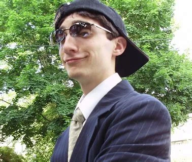

|
Robert F. "Toby" Fox (nascido em 11 de outubro de 1991) é um desenvolvedor e compositor de videogames americano . Ele é mais conhecido por desenvolver o RPG Undertale , que foi aclamado e recebeu indicações ao British Academy Game Award, três prêmios Game Awards e ao DICE Awards . Ele também é o criador e chefe do desenvolvimento contínuo de Deltarune , que contém muitos personagens e recursos de Undertale e recebeu elogios significativos. O trabalho mais conhecido de Fox é o RPG de 2015 Undertale , para o qual ele também compôs a trilha sonora. O jogo vendeu mais de 1 milhão de cópias, tornando-se um "sucesso" e um " fenômeno da cultura pop ". Fox trabalhou em todo o jogo de forma independente, além dos recursos de arte - para os quais ele pediu ajuda a Temmie (Tuyoki) Chang - para evitar depender de outros. Ele pensou nos designs e ideias dos personagens para Undertale enquanto estava na faculdade, onde os desenhou em seu caderno. |
|  |